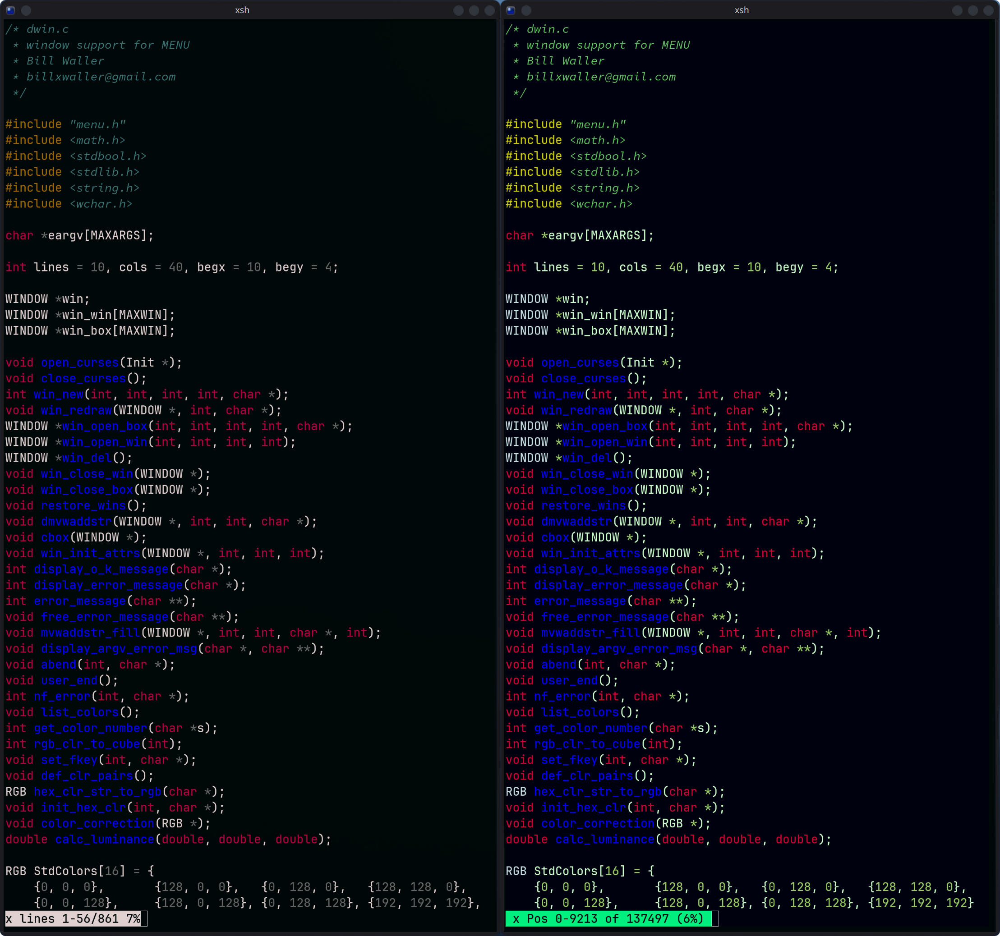
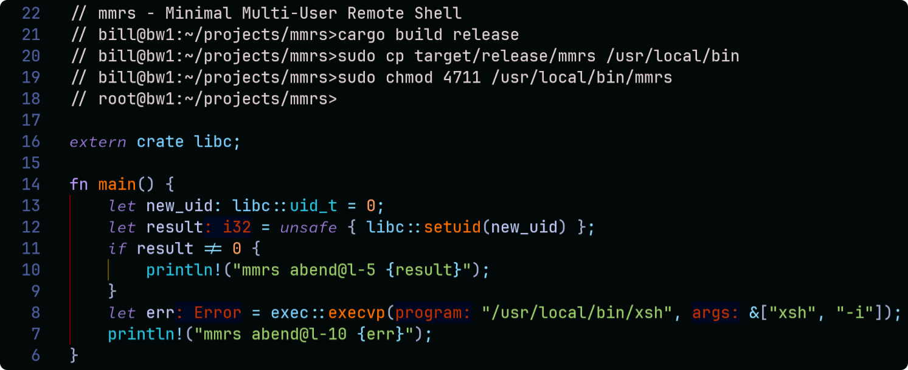

C-Menu is a lightweight, customizable, and easy-to-learn suite of programs for creating menus, entry forms, and pickers with a text-based user interface(TUI) for applications running on Linux and Unix-like operating systems. C-Menu is designed to be simple to use while providing powerful features to implement menu driven frameworks for applications in terminal and terminal emulator environments.

C-Menu reads a simple description file like the one above and displays a menu to the user. When the user selects an item, with either keyboard or mouse, C-Menu executes the corresponding command. It's like writing a shell script, but with a nice TUI menu interface.

From the above examples, you can get an idea of how C-Menu works. Examine line-21 in "main.m" above. C-Menu Menu starts C-Menu View, which in turn executes "tree-sitter highlight view_engine.c". Tree-Sitter doesn't need to know anything about C-Menu View. It just sends output to it's standard output device, which happens to be a pipe set up by C-Menu View. C-Menu View maps Tree-Sitter's output to the Kernel's demand paged virtual memory and you get:

C-Menu C-Keys is a diagnostic tool that helps you resolve keyboard and mouse issues quickly. Just press a key and get the Octal, Decimal, Hexadecimal, the ANSI escape sequence binding, or the NCURSES identifier. It's definately easier than rummaging through hardware documentation and NCurses header files. It's also a good way to identify which keys are reserved by your terminal emulator, and gives you the specific key codes so you can easily add your own Extended NCurses keys.


C-Menu C-Keys also provides a diagnostic capability for mouse actions and geometry.

Just add hot water, stir, and Bob's your uncle, you have soup!

This program provides a list of objects from arguments, piped input, or a text file and lets the user select those to be written to a file, piped to standard output, or provided as arguments to an executable specified in the description file. Of course, you can select objects and commands with keyboard or mouse. C-Menu Pick does not currently support a Brain-Computer Interface. At least, not Yet.
The simplest use of C-Menu Pick is:
Pick a file to view:
view -S "lf -r . .*\.c$"
Execute a script on a picked file:
pick -S "lf -r . .*\.c$" -n 1 -c my_executable
Note that the syntax for "lf" (list files) is not similar to Unix "ls". The usage of "lf" is:
lf [directory] [regular expression]
If you type "lf *.c", it will fail for lack of a valid regular expression. "ls" uses shell expansion, and "lf" uses regular expressions. "lf" is a simple utility that comes with C-Menu. You could just as easily use find to accomplish the same result, and find accepts "*.c", even though it isn't a valid regular expression.
find . -name '*.c' | sed 's/^..//'
Create a list of objects
grep "regex" *.rs | pick -o objectlist
vi ~/.config/bat/config
add
--pager=view
save and type:
bat view_engine.c
FORM is a lightweight and flexible form handling library designed to simplify the process of creating, validating, and managing forms.
It provides a straightforward API for defining form fields, handling user input, and performing validation checks.


FORM displays data entry forms based on a description file. It allows users to input data in a structured manner. The entered data can then be processed by a specified command or script. Internally, the numeric entries are converted to binary integer, long, float, or double.

The two Cash Receipts entry forms above are identical except the top form has field brackets turned on and the bottom form has fill characters set to underscore. This is a simple configuration option from the command line or the configuration file.
If you make a mistake, in the form description syntax, as I did below, you will get a notification pinpointing the problem. In this message, we can see that the format field on line 3 of "receipt.f" is invalid. I have a "3", and it should have been "String". The corrected line would be: "F!2!18!10!String".

Need quick and easy Cash Receipts, General Journal, or wedding invitation list? FORM has you covered. The application shown above took about 10 minutes from design to test. It doesn't post transactions, or keep running balances yet, but that's why we have people like you.
FORM also makes a great front-end for SQL database queries.
As you can see, the description file is straightforward and easy to read. Each menu item consists of a label and a command to execute. The label is displayed in the menu, and the command is executed when the user selects that item.

Here's just one example of how easy it is to create useful programs with the C-Menu Form facility.


We hope you find C-Menu useful for your projects. It's a powerful tool that can greatly simplify the process of creating text-based user interfaces for your applications.
VIEW is an easy-to-use text file viewer that allows users to view text files in a terminal environment. It supports basic navigation, regular expression search functionality, horizontal scrolling, ANSI escape highlighting, Unicode, and NCurses wide characters. VIEW can be invoked from within MENU, FORM, or PICK to provide contextual help or stand-alone, full-screen as a system pager.


One especially useful feature of C-Menu View is its incredible speed with large text files, like system logs. C-Menu View can open and display multi-gigabyte text files almost instantaneously. Seek from beginning to end of a 1Gb file takes a few milliseconds.
C-Menu View can also be used as a pager for manual pages. By setting the "MANPAGER" environment variable to "view", users can enjoy the benefits of C-Menu View's features while reading manual pages. However, setting MANPAGER="Nvim !Man+" is my recommendation. I don't know what Nvim is using to colorize manual pages, but it looks great. The most compelling reason to use Nvim is that it's very easy to write a few lines to a file, or edit the file, if you like.
If you still want to use C-Menu View as your MANPAGER, just add the following line to your shell configuration file (e.g., .bashrc or .zshrc):
export PAGER="view"
You can also filter manual pages through ~/menuapp/msrc/man.sed to colorize underlined,emboldened, and italicized text. This sed script is included with C-Menu. To use it, you can run the following command in your terminal:
man -Tutf8 bash.ls | sed -f ~/menuapp/msrc/man.sed | view


The C-Menu View manual page with the sed filter looks pretty good, but the functionality and smooth interface is not quite there yet. That's a good project for an enterprising programmer with some time on his hands

When using utilities such as "tree-sitter highlighter", "pygmentize", or "bat" to highlight files, the text is sometimes almost unreadable. On the left-hand side of the following screenshot, "less" does a great job of rendering the output of pygmentize, but C-Menu with gamma correction can do better. It's all about perceptual luminance. Either from the command line or the minitrc file, the user can specify a gamma correction value for each of the three color channels, red, green, and blue. It's a minor thing, really, but we programmers aren't "automitons." A pleasing visual appearance makes work more fun.
 Web Content Accessibility Guidelines (WCAG) 2.2
(Australian TV show)
With Unicode glyphs, ANSI escape highlighting, and 3-Channel gamma correction, your application is bound to Wow your clients. Nobody wants an ugly program. Of course, beauty is in the eye of the beholder. That's why we give you control.

Despite its name, RSH is not a shell. It is a shell runner, which allows you to specify your shell of choice, and provides a consistent environment for running shell scripts and commands. RSH was designed to be invoked from within MENU, FORM, or PICK to execute commands that require elevated privileges, but its functionality extends beyond that.
You can execute commands in either user or root mode, making it a versatile tool for developing aplication front-ends. RSH ensures that your scripts and executables run in a controlled environment, reducing the chances of unexpected behavior due to differing shell environments. RSH forks and waits for its spawn to complete before returning control to the calling program. When executed under C-Menu's signal handler, it catches and displays the exit status of the command, allowing for better error handling. Instead of using su -c or sudo to run commands as root, you can use rsh -c to achieve the same result in a more streamlined manner. You can literally have root access within a fraction of a second, making it ideal for work that requires frequent switching between user and root modes for various administrative tasks.
Many system administrators and developers find RSH invaluable for tasks that require elevated privileges. RSH eliminates the need to repeatedly enter passwords or switch users, streamlining workflows and improving efficiency. We all know it's not a good idea to run everything as root, but sometimes a user want's to avoid precious seconds it takes to enter passwords for su. With RSH, it takes three keystrokes to enter root mode and two keystrokes to get out.
Here's an example of the proper way to use RSH.

Notice that the bash prompt changes from green to red as a reminder that you are wielding a loaded gun with the safety off. In this state, it only takes a minor typo, such as:
rm -r tmp/*
Please be very careful when using RSH in setuid root mode. Keep the executable protected in your home directory with appropriate permissions to prevent promiscuous access by unauthorized users. RSH should be provided only to trusted users who understand the implications of executing commands with elevated privileges. Used inappropriately, it can lead to system instability or security vulnerabilities.
As an interesting note, you can accomplish basically the same functionality in 9 lines of Rust by using the 'pub unsafe extern "C" fn setuid(uid: uid_t) -> c_int' function in Rust. Of course, that isn't really in the spirit of Rust, is it?
Create and manage multiple menus, forms, and pickers
Define interfaces using simple configuration files
Perfect for shell scripting, command-line, and terminal based applications
Made for Linux and Unix-like operating systems
Blazingly fast, even on older hardware
Text-based user interface (TUI) using ncurses
Easily customize menu options and actions
Any level of sub-menus
Navigation using keyboard inputs the way God intended
Configurable appearance and behavior
Cross-platform compatibility
Open-source and free to use

User's can have multiple runtime configurations. In the snippet above, the standard ISO 6429 / ECMA-48 colors have been redefined and orange has been added.
To install C-Menu, simply download the source code from the repository and follow the installation instructions provided in the INSTALL.md file.